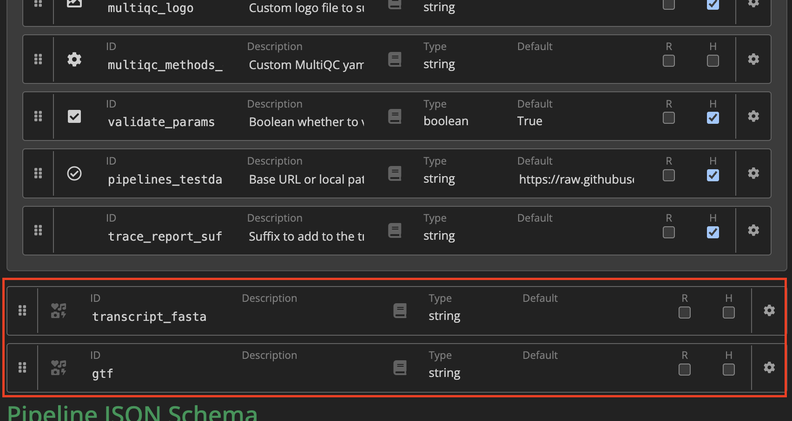

Nextflow Development - Samplesheet Parsing and nf-core modules
- Gain an understanding of how to use nf-core modules in a workflow script
- Manipulate and proprogate sample metadata throughout the workflow
6.1 Samplesheet parsing
In the ./nf-core-customrnaseq/main.nf script, the PIPELINE_INITIALISATION subworkflow created by default from the nf-core template will output a channel that contains the parsed --input samplesheet. This channel is then input into NFCORE_CUSTOMRNASEQ, which launches our analysis workflow containing the newly included modules salmon/index and salmon/quant.
...
include { CUSTOMRNASEQ } from './workflows/customrnaseq'
include { PIPELINE_INITIALISATION } from './subworkflows/local/utils_nfcore_customrnaseq_pipeline'
...
workflow NFCORE_CUSTOMRNASEQ {
take:
samplesheet // channel: samplesheet read in from --input
main:
//
// WORKFLOW: Run pipeline
//
CUSTOMRNASEQ (
samplesheet
)
emit:
multiqc_report = CUSTOMRNASEQ.out.multiqc_report // channel: /path/to/multiqc_report.html
}
...
workflow {
main:
...
//
// WORKFLOW: Run main workflow
//
NFCORE_CUSTOMRNASEQ (
PIPELINE_INITIALISATION.out.samplesheet
)
...
}How does the PIPELINE_INITIALISATION parse the samplesheet?
./nf-core-customrnaseq/subworkflows/local/utils_nfcore_customrnaseq_pipeline/main.nf
//
// Create channel from input file provided through params.input
//
workflow PIPELINE_INITIALISATION {
take:
version // boolean: Display version and exit
validate_params // boolean: Boolean whether to validate parameters against the schema at runtime
monochrome_logs // boolean: Do not use coloured log outputs
nextflow_cli_args // array: List of positional nextflow CLI args
outdir // string: The output directory where the results will be saved
input // string: Path to input samplesheet
main:
...
Channel
.fromList(samplesheetToList(params.input, "${projectDir}/assets/schema_input.json"))
.map {
meta, fastq_1, fastq_2 ->
if (!fastq_2) {
return [ meta.id, meta + [ single_end:true ], [ fastq_1 ] ]
} else {
return [ meta.id, meta + [ single_end:false ], [ fastq_1, fastq_2 ] ]
}
}
.groupTuple()
.map { samplesheet ->
validateInputSamplesheet(samplesheet)
}
.map {
meta, fastqs ->
return [ meta, fastqs.flatten() ]
}
.set { ch_samplesheet }
emit:
samplesheet = ch_samplesheet
versions = ch_versions
}The important pieces of information that we will explore further in this section are:
- The use of a
schema_input.jsonto validate the samplesheet metadata - The use of
.map { }and.groupTuple()functions to manipulate sample metadata
6.1.1 Default samplesheet channel
The samplesheet is automatically parsed, resulting in a channel that contains all relevant data specified in the --input parmeter. What does this channel contain?
Open the analysis workflow file workflows/customrnaseq.nf. Use the .view() function inside the workflow scope to view the ch_samplesheet that has been input to the pipeline:
workflow CUSTOMRNASEQ {
take:
ch_samplesheet // channel: samplesheet read in from --input
main:
ch_samplesheet.view()
ch_versions = Channel.empty()
ch_multiqc_files = Channel.empty()
...
}Now, rerun the pipeline, ensuring -resume is specified in the nextflow run command. Note ebsure you are no longer inside your pipeline folder.
nextflow run ./nf-core-customrnaseq/main.nf -resume -profile apptainer --input ./samplesheet.csv --outdir outputThe channel should have the following structure:
[[id:SRR6357070, single_end:false], [/.../rnaseq_data/testdata/GSE110004/SRR6357070_1.fastq.gz, /.../rnaseq_data/testdata/GSE110004/SRR6357070_2.fastq.gz]]
[[id:SRR6357071, single_end:false], [/.../rnaseq_data/testdata/GSE110004/SRR6357071_1.fastq.gz, /.../rnaseq_data/testdata/GSE110004/SRR6357071_2.fastq.gz]]
[[id:SRR6357072, single_end:false], [/.../rnaseq_data/testdata/GSE110004/SRR6357072_1.fastq.gz, /.../rnaseq_data/testdata/GSE110004/SRR6357072_2.fastq.gz]]This channel contains three elements, one for each sample type. The first element is a tuple, where the first element is a list that represents the sample metadata. This metadata contains the sample name, stored as id, and if the sample is single-ded, stored as single_end. The second element in this tuple contain the paths to the input FASTQ files.
Let’s see how this relates to our samplesheet:
sample,fastq_1,fastq_2
SRR6357070,/.../rnaseq_data/testdata/GSE110004/SRR6357070_1.fastq.gz,/.../rnaseq_data/testdata/GSE110004/SRR6357070_2.fastq.gz
SRR6357071,/.../rnaseq_data/testdata/GSE110004/SRR6357071_1.fastq.gz,/.../rnaseq_data/testdata/GSE110004/SRR6357071_2.fastq.gz
SRR6357072,/.../rnaseq_data/testdata/GSE110004/SRR6357072_1.fastq.gz,/.../rnaseq_data/testdata/GSE110004/SRR6357072_2.fastq.gzNotice that the value under the sample column has been assigned as id in the channel metadata. File paths in the fastq_1 and fastq_2 have been added as the second element in the tuple, which represents the read paths.
This is defined inside the assets/schema_input.json file.
{
"$schema": "https://json-schema.org/draft/2020-12/schema",
"$id": "https://raw.githubusercontent.com/nf-core/customrnaseq/main/assets/schema_input.json",
"title": "nf-core/customrnaseq pipeline - params.input schema",
"description": "Schema for the file provided with params.input",
"type": "array",
"items": {
"type": "object",
"properties": {
"sample": {
"type": "string",
"pattern": "^\\S+$",
"errorMessage": "Sample name must be provided and cannot contain spaces",
"meta": ["id"]
},
"fastq_1": {
"type": "string",
"format": "file-path",
"exists": true,
"pattern": "^\\S+\\.f(ast)?q\\.gz$",
"errorMessage": "FastQ file for reads 1 must be provided, cannot contain spaces and must have extension '.fq.gz' or '.fastq.gz'"
},
"fastq_2": {
"type": "string",
"format": "file-path",
"exists": true,
"pattern": "^\\S+\\.f(ast)?q\\.gz$",
"errorMessage": "FastQ file for reads 2 cannot contain spaces and must have extension '.fq.gz' or '.fastq.gz'"
}
},
"required": ["sample", "fastq_1"]
}
}In this file, each “property” represents a column that can be present inside the --input samplesheet. If a column name was used inside the samplesheet but didn’t specify it in the assets/schema_input.json file, we will get a warning:
sample,fastq_1,fastq_2,lane
SRR6357070,/.../rnaseq_data/testdata/GSE110004/SRR6357070_1.fastq.gz,/.../rnaseq_data/testdata/GSE110004/SRR6357070_2.fastq.gz,1
SRR6357071,/.../rnaseq_data/testdata/GSE110004/SRR6357071_1.fastq.gz,/.../rnaseq_data/testdata/GSE110004/SRR6357071_2.fastq.gz,1
SRR6357072,/.../rnaseq_data/testdata/GSE110004/SRR6357072_1.fastq.gz,/.../rnaseq_data/testdata/GSE110004/SRR6357072_2.fastq.gz,1Rerunning using the new samplesheet:
nextflow run ./nf-core-customrnaseq/main.nf -resume -profile apptainer --input ./samplesheet.csv --outdir outputWARN: Found the following unidentified headers in /.../lesson4.4/samplesheet.csv:
- laneTherefore, if you wish to specify an additional column in the sampleshet (ie. adding sample metadata), the schema_input.json should also be changed to allow for this.
Any required columns are also specified, as the "required" item. Any required items not specified in the samplesheet will cause the pipeline to exit.
For example, removing the SRR6357070_1.fastq.gz file from the samplesheet:
sample,fastq_1,fastq_2
SRR6357070,,/.../rnaseq_data/testdata/GSE110004/SRR6357070_2.fastq.gz
SRR6357071,/.../rnaseq_data/testdata/GSE110004/SRR6357071_1.fastq.gz,/.../rnaseq_data/testdata/GSE110004/SRR6357071_2.fastq.gz
SRR6357072,/.../rnaseq_data/testdata/GSE110004/SRR6357072_1.fastq.gz,/.../rnaseq_data/testdata/GSE110004/SRR6357072_2.fastq.gz!! Only displaying parameters that differ from the pipeline defaults !!
------------------------------------------------------
* The nf-core framework
https://doi.org/10.1038/s41587-020-0439-x
* Software dependencies
https://github.com/nf-core/customrnaseq/blob/master/CITATIONS.md
ERROR ~ Validation of pipeline parameters failed!
-- Check '.nextflow.log' file for details
The following invalid input values have been detected:
* --input (./samplesheet.csv): Validation of file failed:
-> Entry 1: Missing required field(s): fastq_1Inside the "sample" property, the "meta" has been set to ["id"]. This is the value in the channel metadata that the sample name will be assigned to. We will investigate this further later in the session.
Many existing nf-core nodules rely on the input metadata having at least the id value – it is not recommended to change this name from the default.
6.1.2 Input channels to an nf-core module
Now that we know the contents of our parsed samplesheet channel, let’s check what inputs are required to our two processes.
Process salmon/index
From the salmon/index module GitHub page, we see that the process requires two inputs: a genome_fasta file, and a transcript_fasta file.
process SALMON_INDEX {
tag "$transcript_fasta"
label "process_medium"
conda "${moduleDir}/environment.yml"
container "${ workflow.containerEngine == 'singularity' && !task.ext.singularity_pull_docker_container ?
'https://depot.galaxyproject.org/singularity/salmon:1.10.3--h6dccd9a_2' :
'biocontainers/salmon:1.10.3--h6dccd9a_2' }"
input:
path genome_fasta
path transcript_fasta
...
}Let’s take a closer look at the main Nextflow script that we use to launch the pipeline. Near the top of the script, it provides an example of how to set parameters. These parameters can be specified to the nextflow run command using a parameter .yaml file, specified with -params-file.
/*
~~~~~~~~~~~~~~~~~~~~~~~~~~~~~~~~~~~~~~~~~~~~~~~~~~~~~~~~~~~~~~~~~~~~~~~~~~~~~~~~~~~~~~~~
GENOME PARAMETER VALUES
~~~~~~~~~~~~~~~~~~~~~~~~~~~~~~~~~~~~~~~~~~~~~~~~~~~~~~~~~~~~~~~~~~~~~~~~~~~~~~~~~~~~~~~~
*/
// TODO nf-core: Remove this line if you don't need a FASTA file
// This is an example of how to use getGenomeAttribute() to fetch parameters
// from igenomes.config using `--genome`
params.fasta = getGenomeAttribute('fasta')In the template, it provides an example of how to set the fasta parameter that can be passed to the workflow. We will need to add an additional transcript_fasta parameter.
Edit that code block to the following:
/*
~~~~~~~~~~~~~~~~~~~~~~~~~~~~~~~~~~~~~~~~~~~~~~~~~~~~~~~~~~~~~~~~~~~~~~~~~~~~~~~~~~~~~~~~
GENOME PARAMETER VALUES
~~~~~~~~~~~~~~~~~~~~~~~~~~~~~~~~~~~~~~~~~~~~~~~~~~~~~~~~~~~~~~~~~~~~~~~~~~~~~~~~~~~~~~~~
*/
// TODO nf-core: Remove this line if you don't need a FASTA file
// This is an example of how to use getGenomeAttribute() to fetch parameters
// from igenomes.config using `--genome`
params.fasta = getGenomeAttribute('fasta')
params.transcript_fasta = getGenomeAttribute('transcript_fasta')The getGenomeAttribute will access the fasta or transcript_fasta that’s specified to it via the command line or a parameter file, and re-assign it as a Nextflow parameter that can be accessed in workflows.
Now, we can create a parameter file params.yaml, and specify the paths to fasta and transcript_fasta:
fasta: "/.../rnaseq_data/reference/genome.fasta"
transcript_fasta: /.../rnaseq_data/reference/transcriptome.fasta"Since these parameters are strings, we can convert them into channels using the Channel.fromPath channel factory. Open your analysis workflow script nf-core-customrnaseq/workflows/customrnaseq.nf and add the following:
workflow CUSTOMRNASEQ {
take:
ch_samplesheet // channel: samplesheet read in from --input
main:
// Gather reference files
ch_genome_fasta = Channel.fromPath(params.fasta)
ch_transcript_fasta = Channel.fromPath(params.transcript_fasta)
ch_versions = Channel.empty()
ch_multiqc_files = Channel.empty()
...
}Nextflow parameters are global variables that can be accessed by any script within the pipeline. Therefore, it doesn’t need to be passed from one file/workflow/process to another.
The newly created channels ch_genome_fasta and ch_transcript_fasta match the inputs defined in the SALMON_INDEX process. Suppy these channels as inputs to the SALMON_INDEX, inside workflow CUSTOMRNASEQ { ... }
SALMON_INDEX (
ch_genome_fasta,
ch_transcript_fasta
)Rerun the pipeline, specifying the params.yaml file in the nextflow run command
nextflow run ./nf-core-customrnaseq/main.nf -resume -profile apptainer --input ./samplesheet.csv --outdir output -params-file ./params.yaml
N E X T F L O W ~ version 24.10.5
Launching `./nf-core-customrnaseq/main.nf` [goofy_cori] DSL2 - revision: 5492b74b7a
------------------------------------------------------
,--./,-.
___ __ __ __ ___ /,-._.--~'
|\ | |__ __ / ` / \ |__) |__ } {
| \| | \__, \__/ | \ |___ \`-._,-`-,
`._,._,'
nf-core/customrnaseq 1.0.0dev
------------------------------------------------------
Input/output options
input : ./samplesheet.csv
outdir : output
Generic options
trace_report_suffix: 2025-05-06_03-22-36
Core Nextflow options
runName : goofy_cori
containerEngine : singularity
launchDir : /scratch/users/sli/workshop/pipeline
workDir : /scratch/users/sli/workshop/pipeline/work
projectDir : /scratch/users/sli/workshop/pipeline/nf-core-customrnaseq
userName : sli
profile : singularity
configFiles : /scratch/users/sli/workshop/pipeline/nf-core-customrnaseq/nextflow.config
!! Only displaying parameters that differ from the pipeline defaults !!
------------------------------------------------------
* The nf-core framework
https://doi.org/10.1038/s41587-020-0439-x
* Software dependencies
https://github.com/nf-core/customrnaseq/blob/main/CITATIONS.md
WARN: The following invalid input values have been detected:
* --transcript_fasta: /scratch/users/sli/workshop/training/nf-training/data/ggal/transcriptome.fa
executor > local (1)
[19/79bd6e] NFCORE_CUSTOMRNASEQ:CUSTOMRNASEQ:FASTQC (liver) | 3 of 3, cached: 3 ✔
[5c/05a99e] NFC…ASEQ:CUSTOMRNASEQ:SALMON_INDEX (transcriptome.fa) | 1 of 1 ✔
[e4/41d893] NFCORE_CUSTOMRNASEQ:CUSTOMRNASEQ:MULTIQC | 1 of 1 ✔
-[nf-core/customrnaseq] Pipeline completed successfully-Here, the pipeline completed successfully, with the new process SALMON_INDEX completing successfully. However, there is one new warning, which we will discuss more later:
WARN: The following invalid input values have been detected:
* --transcript_fasta: /scratch/users/sli/workshop/training/nf-training/data/ggal/transcriptome.faProcess salmon/quant
Let’s repeat the process for salmon/quant. Now that we know the contents of the parsed samplesheet channel, we need to determine if this channel is suitable to be used in our processes.
[[name:gut, single_end:false], [/.../data/gut_1.fastq.gz, /.../data/gut_2.fastq.gz]]
[[name:liver, single_end:false], [/.../data/liver_1.fastq.gz, /.../data/liver_2.fastq.gz]]
[[name:lung, single_end:false], [/.../data/lung_1.fastq.gz, /.../data/lung_2.fastq.gz]]From the salmon/quant module GitHub page, we see that many inputs are needed in addition to our data.
process SALMON_QUANT {
tag "$meta.id"
label "process_medium"
conda "${moduleDir}/environment.yml"
container "${ workflow.containerEngine == 'singularity' && !task.ext.singularity_pull_docker_container ?
'https://depot.galaxyproject.org/singularity/salmon:1.10.3--h6dccd9a_2' :
'biocontainers/salmon:1.10.3--h6dccd9a_2' }"
input:
tuple val(meta), path(reads)
path index
path gtf
path transcript_fasta
val alignment_mode
val lib_type
...
}- The first input that is required is a tuple of two elements – the first element containing the sample metadata, and the second element containing the paths to the FASTQ files. The default channel parsed from the samplesheet matches this structure, so it can be used as the input.
Recall that when a process is exected, the output containing the process name, along with the contents of the tag directive will be printed:
[1a/915255] process > FOO (omega) [100%] 3 of 3 ✔In the first input to the process, the sample metadata is specified – the id contained within this metadata is accessed (ie. the sample name), and used in the tag directive. This directive is typically defined as “$meta.id” for all nf-core processes, so it is recommended that your pipeline contains this id metadata value.
The second input to the process is the path to the index file. The
SALMON_INDEXoutput of this process can be used as input toSALMON_QUANTThe third input is the GTF file. The followig file can be used:
/.../rnaseq_data/reference/genes.gtfThe last two inputs are values that defines how
SALMON_QUANTwill be ran. For now, let’s define these variables within the workflow block ofworkflows/customrnaseq.nf:
def align_mode = false
def lib_type = "A"Exercise: Following the steps we used previously to add fasta and transcript_fasta to the workflow, repeat it for gtf. Provide these inputs to the SALMON_QUANT and rerun the workflow, ensuring the new process has been executed.
- Inside
nf-core-customrnaseq/main.nf, thegtfparameter is added:
params.gtf = getGenomeAttribute('gtf')- The path to the
gtffile is specified in theparams.yaml:
gtf: "/.../rnaseq_data/reference/genes.gtf"- Inside
workflows/customrnaseq.nf, convert the parameter to a channel
ch_gtf = Channel.fromPath(params.gtf)- The inputs to
SALMON_QUANTare defined as:
SALMON_QUANT (
ch_samplesheet,
SALMON_INDEX.out.index,
ch_gtf,
ch_transcript_fasta,
align_mode,
lib_type
)Note that the order of inputs matter, and have to match what is declared in the process input definition.
- The new process
SALMON_QUANTis present, when rerunning the pipeline
nextflow run ./nf-core-customrnaseq/main.nf -resume -profile apptainer --input ./samplesheet.csv --outdir output -params-file ./params.yaml executor > local (2)
[8e/9633e2] process > NFCORE_CUSTOMRNASEQ:CUSTOMRNASEQ:SALMON_INDEX (transcriptome.fasta) [100%] 1 of 1, cached: 1 ✔
[bb/d103d3] process > NFCORE_CUSTOMRNASEQ:CUSTOMRNASEQ:SALMON_QUANT (SRR6357070) [100%] 1 of 1 ✔
[fa/542072] process > NFCORE_CUSTOMRNASEQ:CUSTOMRNASEQ:FASTQC (SRR6357072) [100%] 3 of 3, cached: 3 ✔
[0f/6225cc] process > NFCORE_CUSTOMRNASEQ:CUSTOMRNASEQ:MULTIQC [100%] 1 of 1 ✔
-[nf-core/customrnaseq] Pipeline completed successfully-#!/usr/bin/env nextflow
/*
~~~~~~~~~~~~~~~~~~~~~~~~~~~~~~~~~~~~~~~~~~~~~~~~~~~~~~~~~~~~~~~~~~~~~~~~~~~~~~~~~~~~~~~~
nf-core/customrnaseq
~~~~~~~~~~~~~~~~~~~~~~~~~~~~~~~~~~~~~~~~~~~~~~~~~~~~~~~~~~~~~~~~~~~~~~~~~~~~~~~~~~~~~~~~
Github : https://github.com/nf-core/customrnaseq
Website: https://nf-co.re/customrnaseq
Slack : https://nfcore.slack.com/channels/customrnaseq
----------------------------------------------------------------------------------------
*/
/*
~~~~~~~~~~~~~~~~~~~~~~~~~~~~~~~~~~~~~~~~~~~~~~~~~~~~~~~~~~~~~~~~~~~~~~~~~~~~~~~~~~~~~~~~
IMPORT FUNCTIONS / MODULES / SUBWORKFLOWS / WORKFLOWS
~~~~~~~~~~~~~~~~~~~~~~~~~~~~~~~~~~~~~~~~~~~~~~~~~~~~~~~~~~~~~~~~~~~~~~~~~~~~~~~~~~~~~~~~
*/
include { CUSTOMRNASEQ } from './workflows/customrnaseq'
include { PIPELINE_INITIALISATION } from './subworkflows/local/utils_nfcore_customrnaseq_pipeline'
include { PIPELINE_COMPLETION } from './subworkflows/local/utils_nfcore_customrnaseq_pipeline'
include { getGenomeAttribute } from './subworkflows/local/utils_nfcore_customrnaseq_pipeline'
/*
~~~~~~~~~~~~~~~~~~~~~~~~~~~~~~~~~~~~~~~~~~~~~~~~~~~~~~~~~~~~~~~~~~~~~~~~~~~~~~~~~~~~~~~~
GENOME PARAMETER VALUES
~~~~~~~~~~~~~~~~~~~~~~~~~~~~~~~~~~~~~~~~~~~~~~~~~~~~~~~~~~~~~~~~~~~~~~~~~~~~~~~~~~~~~~~~
*/
// TODO nf-core: Remove this line if you don't need a FASTA file
// This is an example of how to use getGenomeAttribute() to fetch parameters
// from igenomes.config using `--genome`
params.fasta = getGenomeAttribute('fasta')
params.transcript_fasta = getGenomeAttribute('transcript_fasta')
params.gtf = getGenomeAttribute('gtf')
/*
~~~~~~~~~~~~~~~~~~~~~~~~~~~~~~~~~~~~~~~~~~~~~~~~~~~~~~~~~~~~~~~~~~~~~~~~~~~~~~~~~~~~~~~~
NAMED WORKFLOWS FOR PIPELINE
~~~~~~~~~~~~~~~~~~~~~~~~~~~~~~~~~~~~~~~~~~~~~~~~~~~~~~~~~~~~~~~~~~~~~~~~~~~~~~~~~~~~~~~~
*/
//
// WORKFLOW: Run main analysis pipeline depending on type of input
//
workflow NFCORE_CUSTOMRNASEQ {
take:
samplesheet // channel: samplesheet read in from --input
main:
//
// WORKFLOW: Run pipeline
//
CUSTOMRNASEQ (
samplesheet
)
emit:
multiqc_report = CUSTOMRNASEQ.out.multiqc_report // channel: /path/to/multiqc_report.html
}
/*
~~~~~~~~~~~~~~~~~~~~~~~~~~~~~~~~~~~~~~~~~~~~~~~~~~~~~~~~~~~~~~~~~~~~~~~~~~~~~~~~~~~~~~~~
RUN MAIN WORKFLOW
~~~~~~~~~~~~~~~~~~~~~~~~~~~~~~~~~~~~~~~~~~~~~~~~~~~~~~~~~~~~~~~~~~~~~~~~~~~~~~~~~~~~~~~~
*/
workflow {
main:
//
// SUBWORKFLOW: Run initialisation tasks
//
PIPELINE_INITIALISATION (
params.version,
params.validate_params,
params.monochrome_logs,
args,
params.outdir,
params.input
)
//
// WORKFLOW: Run main workflow
//
NFCORE_CUSTOMRNASEQ (
PIPELINE_INITIALISATION.out.samplesheet
)
//
// SUBWORKFLOW: Run completion tasks
//
PIPELINE_COMPLETION (
params.email,
params.email_on_fail,
params.plaintext_email,
params.outdir,
params.monochrome_logs,
params.hook_url,
NFCORE_CUSTOMRNASEQ.out.multiqc_report
)
}
/*
~~~~~~~~~~~~~~~~~~~~~~~~~~~~~~~~~~~~~~~~~~~~~~~~~~~~~~~~~~~~~~~~~~~~~~~~~~~~~~~~~~~~~~~~
THE END
~~~~~~~~~~~~~~~~~~~~~~~~~~~~~~~~~~~~~~~~~~~~~~~~~~~~~~~~~~~~~~~~~~~~~~~~~~~~~~~~~~~~~~~~
*//*
~~~~~~~~~~~~~~~~~~~~~~~~~~~~~~~~~~~~~~~~~~~~~~~~~~~~~~~~~~~~~~~~~~~~~~~~~~~~~~~~~~~~~~~~
IMPORT MODULES / SUBWORKFLOWS / FUNCTIONS
~~~~~~~~~~~~~~~~~~~~~~~~~~~~~~~~~~~~~~~~~~~~~~~~~~~~~~~~~~~~~~~~~~~~~~~~~~~~~~~~~~~~~~~~
*/
include { FASTQC } from '../modules/nf-core/fastqc/main'
include { MULTIQC } from '../modules/nf-core/multiqc/main'
include { paramsSummaryMap } from 'plugin/nf-schema'
include { paramsSummaryMultiqc } from '../subworkflows/nf-core/utils_nfcore_pipeline'
include { softwareVersionsToYAML } from '../subworkflows/nf-core/utils_nfcore_pipeline'
include { methodsDescriptionText } from '../subworkflows/local/utils_nfcore_customrnaseq_pipeline'
include { SALMON_INDEX } from '../modules/nf-core/salmon/index/main'
include { SALMON_QUANT } from '../modules/nf-core/salmon/quant/main'
/*
~~~~~~~~~~~~~~~~~~~~~~~~~~~~~~~~~~~~~~~~~~~~~~~~~~~~~~~~~~~~~~~~~~~~~~~~~~~~~~~~~~~~~~~~
RUN MAIN WORKFLOW
~~~~~~~~~~~~~~~~~~~~~~~~~~~~~~~~~~~~~~~~~~~~~~~~~~~~~~~~~~~~~~~~~~~~~~~~~~~~~~~~~~~~~~~~
*/
workflow CUSTOMRNASEQ {
take:
ch_samplesheet // channel: samplesheet read in from --input
main:
// Gather reference files
ch_genome_fasta = Channel.fromPath(params.genome_fasta)
ch_transcript_fasta = Channel.fromPath(params.transcript_fasta)
ch_gtf = Channel.fromPath(params.gtf)
ch_versions = Channel.empty()
ch_multiqc_files = Channel.empty()
//
// MODULE: Run FastQC
//
FASTQC (
ch_samplesheet
)
ch_multiqc_files = ch_multiqc_files.mix(FASTQC.out.zip.collect{it[1]})
ch_versions = ch_versions.mix(FASTQC.out.versions.first())
SALMON_INDEX (
ch_genome_fasta,
ch_transcript_fasta
)
def align_mode = false
def lib_type = "A"
SALMON_QUANT (
ch_samplesheet,
SALMON_INDEX.out.index,
ch_gtf,
ch_transcript_fasta,
align_mode,
lib_type
)
//
// Collate and save software versions
//
softwareVersionsToYAML(ch_versions)
.collectFile(
storeDir: "${params.outdir}/pipeline_info",
name: 'nf_core_' + 'customrnaseq_software_' + 'mqc_' + 'versions.yml',
sort: true,
newLine: true
).set { ch_collated_versions }
//
// MODULE: MultiQC
//
ch_multiqc_config = Channel.fromPath(
"$projectDir/assets/multiqc_config.yml", checkIfExists: true)
ch_multiqc_custom_config = params.multiqc_config ?
Channel.fromPath(params.multiqc_config, checkIfExists: true) :
Channel.empty()
ch_multiqc_logo = params.multiqc_logo ?
Channel.fromPath(params.multiqc_logo, checkIfExists: true) :
Channel.empty()
summary_params = paramsSummaryMap(
workflow, parameters_schema: "nextflow_schema.json")
ch_workflow_summary = Channel.value(paramsSummaryMultiqc(summary_params))
ch_multiqc_files = ch_multiqc_files.mix(
ch_workflow_summary.collectFile(name: 'workflow_summary_mqc.yaml'))
ch_multiqc_custom_methods_description = params.multiqc_methods_description ?
file(params.multiqc_methods_description, checkIfExists: true) :
file("$projectDir/assets/methods_description_template.yml", checkIfExists: true)
ch_methods_description = Channel.value(
methodsDescriptionText(ch_multiqc_custom_methods_description))
ch_multiqc_files = ch_multiqc_files.mix(ch_collated_versions)
ch_multiqc_files = ch_multiqc_files.mix(
ch_methods_description.collectFile(
name: 'methods_description_mqc.yaml',
sort: true
)
)
MULTIQC (
ch_multiqc_files.collect(),
ch_multiqc_config.toList(),
ch_multiqc_custom_config.toList(),
ch_multiqc_logo.toList(),
[],
[]
)
emit:multiqc_report = MULTIQC.out.report.toList() // channel: /path/to/multiqc_report.html
versions = ch_versions // channel: [ path(versions.yml) ]
}
/*
~~~~~~~~~~~~~~~~~~~~~~~~~~~~~~~~~~~~~~~~~~~~~~~~~~~~~~~~~~~~~~~~~~~~~~~~~~~~~~~~~~~~~~~~
THE END
~~~~~~~~~~~~~~~~~~~~~~~~~~~~~~~~~~~~~~~~~~~~~~~~~~~~~~~~~~~~~~~~~~~~~~~~~~~~~~~~~~~~~~~~
*/6.2 Schema validation
When running the pipeline you may have noticed that although the pipeline completed successfully, there were warnings output:
WARN: The following invalid input values have been detected:
* --transcript_fasta: /home/goldmire/rnaseq_data/reference/transcriptome.fasta
* --gtf: /home/goldmire/rnaseq_data/reference/genes.gtfThese warnings are because the new input parameters we specified to the pipeline were not included in the nf-core-customrnaseq/nextflow_schema.json file.
This file contains all the information about pipeline configuration parameters.
nextflow_schema.json
{
"$schema": "https://json-schema.org/draft/2020-12/schema",
"$id": "https://raw.githubusercontent.com/nf-core/customrnaseq/master/nextflow_schema.json",
"title": "nf-core/customrnaseq pipeline parameters",
"description": "Custom RNASeq pipeline",
"type": "object",
"$defs": {
"input_output_options": {
"title": "Input/output options",
"type": "object",
"fa_icon": "fas fa-terminal",
"description": "Define where the pipeline should find input data and save output data.",
"required": ["input", "outdir"],
"properties": {
"input": {
"type": "string",
"format": "file-path",
"exists": true,
"schema": "assets/schema_input.json",
"mimetype": "text/csv",
"pattern": "^\\S+\\.csv$",
"description": "Path to comma-separated file containing information about the samples in the experiment.",
"help_text": "You will need to create a design file with information about the samples in your experiment before running the pipeline. Use this parameter to specify its location. It has to be a comma-separated file with 3 columns, and a header row. See [usage docs](https://nf-co.re/customrnaseq/usage#samplesheet-input).",
"fa_icon": "fas fa-file-csv"
},
"outdir": {
"type": "string",
"format": "directory-path",
"description": "The output directory where the results will be saved. You have to use absolute paths to storage on Cloud infrastructure.",
"fa_icon": "fas fa-folder-open"
},
"email": {
"type": "string",
"description": "Email address for completion summary.",
"fa_icon": "fas fa-envelope",
"help_text": "Set this parameter to your e-mail address to get a summary e-mail with details of the run sent to you when the workflow exits. If set in your user config file (`~/.nextflow/config`) then you don't need to specify this on the command line for every run.",
"pattern": "^([a-zA-Z0-9_\\-\\.]+)@([a-zA-Z0-9_\\-\\.]+)\\.([a-zA-Z]{2,5})$"
},
"multiqc_title": {
"type": "string",
"description": "MultiQC report title. Printed as page header, used for filename if not otherwise specified.",
"fa_icon": "fas fa-file-signature"
}
}
},
"reference_genome_options": {
"title": "Reference genome options",
"type": "object",
"fa_icon": "fas fa-dna",
"description": "Reference genome related files and options required for the workflow.",
"properties": {
"genome": {
"type": "string",
"description": "Name of iGenomes reference.",
"fa_icon": "fas fa-book",
"help_text": "If using a reference genome configured in the pipeline using iGenomes, use this parameter to give the ID for the reference. This is then used to build the full paths for all required reference genome files e.g. `--genome GRCh38`. \n\nSee the [nf-core website docs](https://nf-co.re/usage/reference_genomes) for more details."
},
"fasta": {
"type": "string",
"format": "file-path",
"exists": true,
"mimetype": "text/plain",
"pattern": "^\\S+\\.fn?a(sta)?(\\.gz)?$",
"description": "Path to FASTA genome file.",
"help_text": "This parameter is *mandatory* if `--genome` is not specified. If you don't have a BWA index available this will be generated for you automatically. Combine with `--save_reference` to save BWA index for future runs.",
"fa_icon": "far fa-file-code"
},
"igenomes_ignore": {
"type": "boolean",
"description": "Do not load the iGenomes reference config.",
"fa_icon": "fas fa-ban",
"hidden": true,
"help_text": "Do not load `igenomes.config` when running the pipeline. You may choose this option if you observe clashes between custom parameters and those supplied in `igenomes.config`."
},
"igenomes_base": {
"type": "string",
"format": "directory-path",
"description": "The base path to the igenomes reference files",
"fa_icon": "fas fa-ban",
"hidden": true,
"default": "s3://ngi-igenomes/igenomes/"
}
}
},
"institutional_config_options": {
"title": "Institutional config options",
"type": "object",
"fa_icon": "fas fa-university",
"description": "Parameters used to describe centralised config profiles. These should not be edited.",
"help_text": "The centralised nf-core configuration profiles use a handful of pipeline parameters to describe themselves. This information is then printed to the Nextflow log when you run a pipeline. You should not need to change these values when you run a pipeline.",
"properties": {
"custom_config_version": {
"type": "string",
"description": "Git commit id for Institutional configs.",
"default": "master",
"hidden": true,
"fa_icon": "fas fa-users-cog"
},
"custom_config_base": {
"type": "string",
"description": "Base directory for Institutional configs.",
"default": "https://raw.githubusercontent.com/nf-core/configs/master",
"hidden": true,
"help_text": "If you're running offline, Nextflow will not be able to fetch the institutional config files from the internet. If you don't need them, then this is not a problem. If you do need them, you should download the files from the repo and tell Nextflow where to find them with this parameter.",
"fa_icon": "fas fa-users-cog"
},
"config_profile_name": {
"type": "string",
"description": "Institutional config name.",
"hidden": true,
"fa_icon": "fas fa-users-cog"
},
"config_profile_description": {
"type": "string",
"description": "Institutional config description.",
"hidden": true,
"fa_icon": "fas fa-users-cog"
},
"config_profile_contact": {
"type": "string",
"description": "Institutional config contact information.",
"hidden": true,
"fa_icon": "fas fa-users-cog"
},
"config_profile_url": {
"type": "string",
"description": "Institutional config URL link.",
"hidden": true,
"fa_icon": "fas fa-users-cog"
}
}
},
"generic_options": {
"title": "Generic options",
"type": "object",
"fa_icon": "fas fa-file-import",
"description": "Less common options for the pipeline, typically set in a config file.",
"help_text": "These options are common to all nf-core pipelines and allow you to customise some of the core preferences for how the pipeline runs.\n\nTypically these options would be set in a Nextflow config file loaded for all pipeline runs, such as `~/.nextflow/config`.",
"properties": {
"version": {
"type": "boolean",
"description": "Display version and exit.",
"fa_icon": "fas fa-question-circle",
"hidden": true
},
"publish_dir_mode": {
"type": "string",
"default": "copy",
"description": "Method used to save pipeline results to output directory.",
"help_text": "The Nextflow `publishDir` option specifies which intermediate files should be saved to the output directory. This option tells the pipeline what method should be used to move these files. See [Nextflow docs](https://www.nextflow.io/docs/latest/process.html#publishdir) for details.",
"fa_icon": "fas fa-copy",
"enum": ["symlink", "rellink", "link", "copy", "copyNoFollow", "move"],
"hidden": true
},
"email_on_fail": {
"type": "string",
"description": "Email address for completion summary, only when pipeline fails.",
"fa_icon": "fas fa-exclamation-triangle",
"pattern": "^([a-zA-Z0-9_\\-\\.]+)@([a-zA-Z0-9_\\-\\.]+)\\.([a-zA-Z]{2,5})$",
"help_text": "An email address to send a summary email to when the pipeline is completed - ONLY sent if the pipeline does not exit successfully.",
"hidden": true
},
"plaintext_email": {
"type": "boolean",
"description": "Send plain-text email instead of HTML.",
"fa_icon": "fas fa-remove-format",
"hidden": true
},
"max_multiqc_email_size": {
"type": "string",
"description": "File size limit when attaching MultiQC reports to summary emails.",
"pattern": "^\\d+(\\.\\d+)?\\.?\\s*(K|M|G|T)?B$",
"default": "25.MB",
"fa_icon": "fas fa-file-upload",
"hidden": true
},
"monochrome_logs": {
"type": "boolean",
"description": "Do not use coloured log outputs.",
"fa_icon": "fas fa-palette",
"hidden": true
},
"hook_url": {
"type": "string",
"description": "Incoming hook URL for messaging service",
"fa_icon": "fas fa-people-group",
"help_text": "Incoming hook URL for messaging service. Currently, MS Teams and Slack are supported.",
"hidden": true
},
"multiqc_config": {
"type": "string",
"format": "file-path",
"description": "Custom config file to supply to MultiQC.",
"fa_icon": "fas fa-cog",
"hidden": true
},
"multiqc_logo": {
"type": "string",
"description": "Custom logo file to supply to MultiQC. File name must also be set in the MultiQC config file",
"fa_icon": "fas fa-image",
"hidden": true
},
"multiqc_methods_description": {
"type": "string",
"description": "Custom MultiQC yaml file containing HTML including a methods description.",
"fa_icon": "fas fa-cog"
},
"validate_params": {
"type": "boolean",
"description": "Boolean whether to validate parameters against the schema at runtime",
"default": true,
"fa_icon": "fas fa-check-square",
"hidden": true
},
"pipelines_testdata_base_path": {
"type": "string",
"fa_icon": "far fa-check-circle",
"description": "Base URL or local path to location of pipeline test dataset files",
"default": "https://raw.githubusercontent.com/nf-core/test-datasets/",
"hidden": true
},
"trace_report_suffix": {
"type": "string",
"fa_icon": "far calendar",
"description": "Suffix to add to the trace report filename. Default is the date and time in the format yyyy-MM-dd_HH-mm-ss.",
"hidden": true
}
}
}
},
"allOf": [
{
"$ref": "#/$defs/input_output_options"
},
{
"$ref": "#/$defs/reference_genome_options"
},
{
"$ref": "#/$defs/institutional_config_options"
},
{
"$ref": "#/$defs/generic_options"
}
]
}Inside this file, the main parameters are separated into groups:
input_output_options: defines input and output parameter options to the pipelinereference_genome_options: defines reference parameters in the pipeline. Notice thatfastahas already been included by default, so no warning about that parameter was output by the pipelineinstitutional_config_options: defines institution parameters such as profile names and custon institutional config versionsgeneric_options: defines pipeline versions, email mode, additional configs, etc.
To edit this nextflow_schema.config file, the following nf-core command can be used inside the pipeline folder:
cd ./nf-core-customrnaseq
nf-core pipelines schema build ,--./,-.
___ __ __ __ ___ /,-._.--~\
|\ | |__ __ / ` / \ |__) |__ } {
| \| | \__, \__/ | \ |___ \`-._,-`-,
`._,._,'
nf-core/tools version 3.2.0 - https://nf-co.re
There is a new version of nf-core/tools available! (3.2.1)
INFO [✓] Default parameters match schema validation
INFO [✓] Pipeline schema looks valid (found 27 params)
✨ Found 'params.transcript_fasta' in the pipeline config, but not in the schema. Add to pipeline schema? [y/n]: y
✨ Found 'params.gtf' in the pipeline config, but not in the schema. Add to pipeline schema? [y/n]: y
INFO Writing schema with 29 params: 'nextflow_schema.json'
🚀 Launch web builder for customisation and editing? [y/n]: yThis command will search for any parameters that are not defined in the schema, and ask if you would like to add them to the file. When editing, it is recommended to launch the web builder.
The new parameters have been added to the bottom of the parameter list:

You have the option to add a parameter description, change the parameter type, specify a default value, and set if the parameter is required. Then, click and drag to the relevant section in the schema. We will drag this into the reference_genome_options section.
Once done, click Finished in the top right corner, and exit the window – the nextflow_schema.json file will be automatically updated. Open the file and check that the two new parameters have been added:
"transcript_fasta": {
"type": "string",
"description": "Transcript FASTA file"
},
"gtf": {
"type": "string",
"description": "GTF file"
}Rerun the pipeline, and check that there are no input parameter warning messages:
nextflow run ./nf-core-customrnaseq/main.nf -resume -profile apptainer --input ./samplesheet.csv --outdir output -params-file ./params.yaml executor > local (1)
[8e/9633e2] process > NFCORE_CUSTOMRNASEQ:CUSTOMRNASEQ:SALMON_INDEX (transcriptome.fasta) [100%] 1 of 1, cached: 1 ✔
[bb/d103d3] process > NFCORE_CUSTOMRNASEQ:CUSTOMRNASEQ:SALMON_QUANT (SRR6357070) [100%] 1 of 1, cached: 1 ✔
[fa/542072] process > NFCORE_CUSTOMRNASEQ:CUSTOMRNASEQ:FASTQC (SRR6357072) [100%] 3 of 3, cached: 3 ✔
[d4/c1e1f9] process > NFCORE_CUSTOMRNASEQ:CUSTOMRNASEQ:MULTIQC [100%] 1 of 1 ✔
-[nf-core/customrnaseq] Pipeline completed successfully-Nextflow Development - Samplesheet Parsing and nf-core modules – Peter Mac Nextflow Workshop Nextflow Development - Samplesheet Parsing and nf-core modules – Peter Mac Nextflow Workshop Nextflow Development - Samplesheet Parsing and nf-core modules – Peter Mac Nextflow Workshop Peter Mac Nextflow Workshop